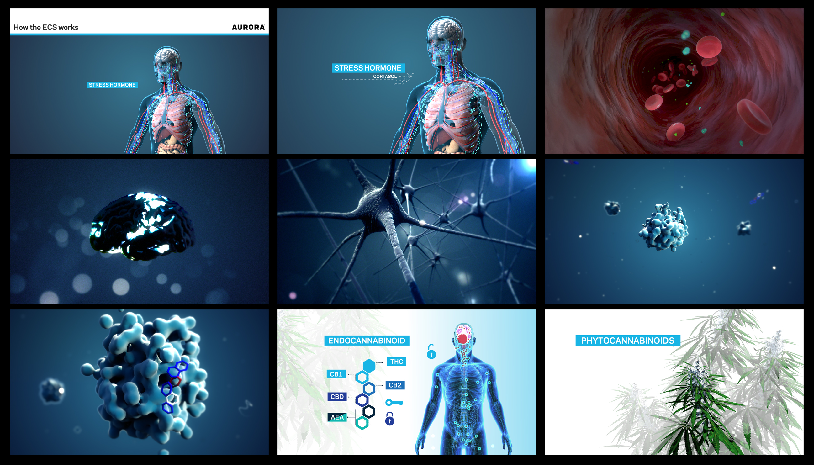
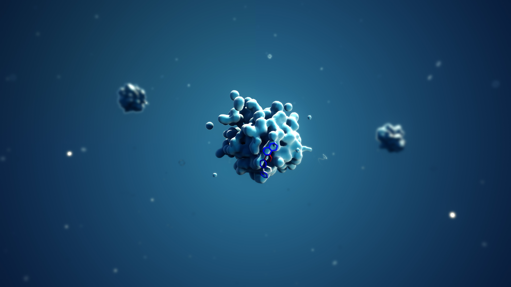
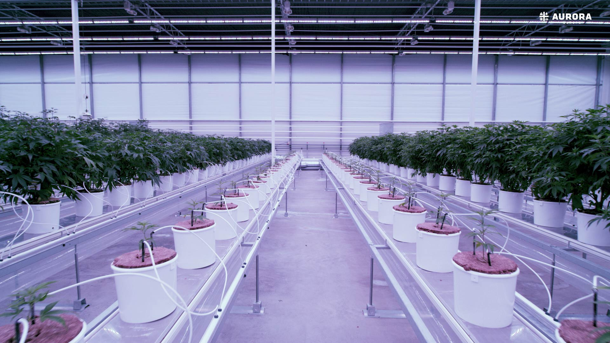
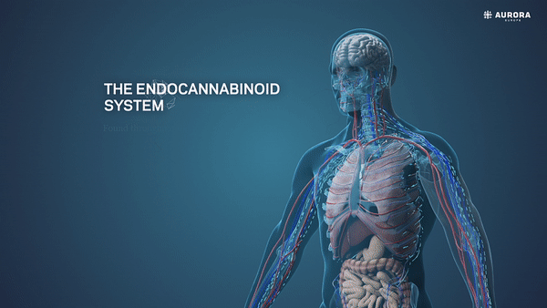
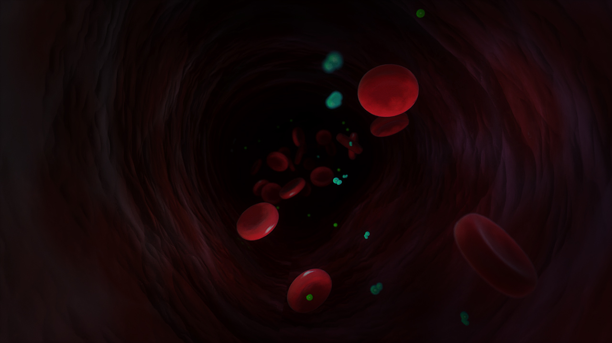
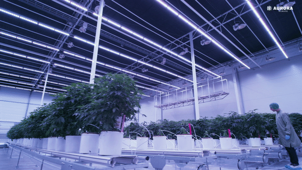
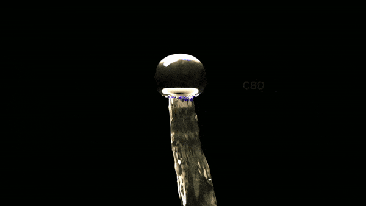

Aurora : Main film
Director / Concept / Design & Animation
Beej was contacted by Chris Kelly from Good Life CBD, and tasked with directing a series of films about sweet Mary J and her health benefits. Sponsored by Aurora, the three films were set out to educate Doctors on the health benefits of cannabis and educate medical practitioners on how CBD affects the endocannabinoid system works, and primarily how cannabis can improve the global health industry. The stakes were high!
The films Beej was responsible for were
Film 1 : The endocannabinoid system, Is a full CGI film illustrating how CBD creates homeostasis in the body focusing on the endocannabinoid system. The film was made using Cinema 4d and Adobe after effects.
Role : Director/All CGI/Edit
Film 2 : Production. This film focuses on Auroras European production facility in Denmark. We had the pleasure of rubbing shoulders with some of the worlds finest strains. Documenting some of the lineage, and going in to the microscopic resins and trichomes that make up this wonderful plant.
Role : Director/Edit/Grade
Film 3 : The medical market. Film 3 focuses on the health statistics and medicinal market. Highlighting the effects cannabis has on the overall health, and how this would typically fit into a medical practitioners work.

Film 1 : The endocannabinoid system






